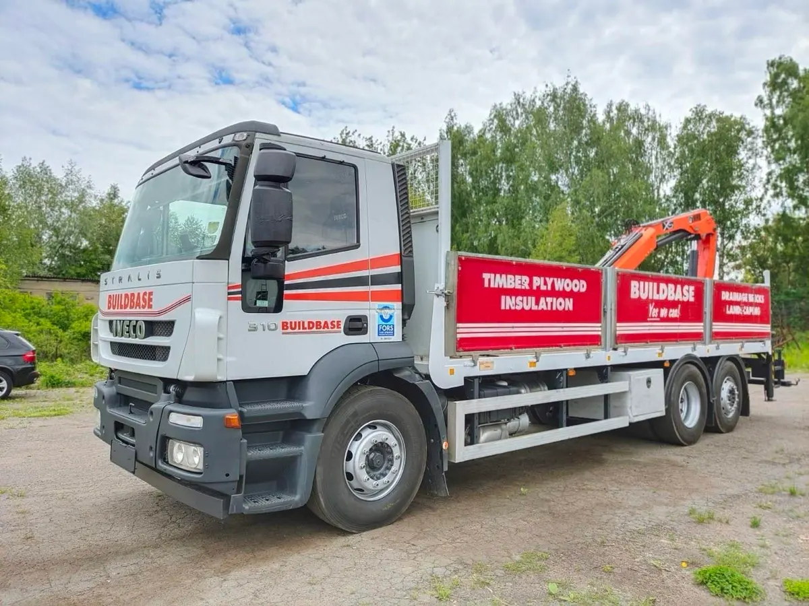
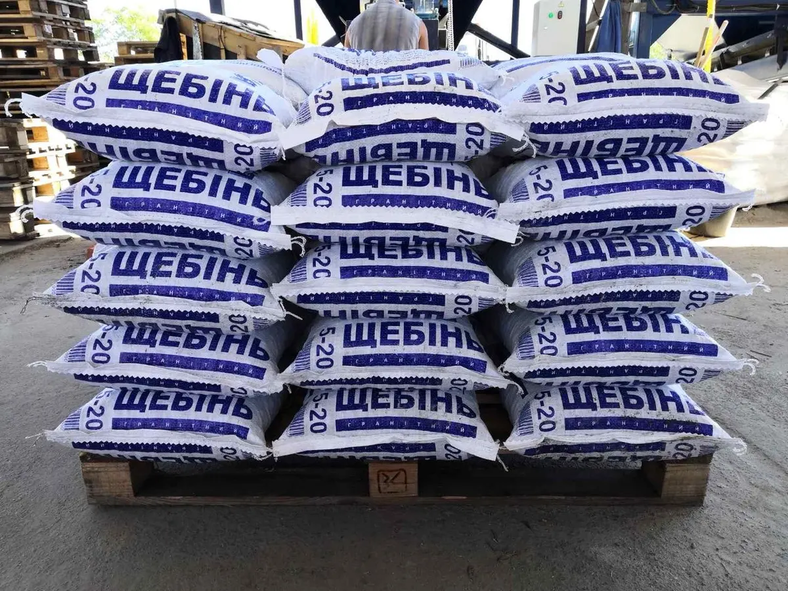
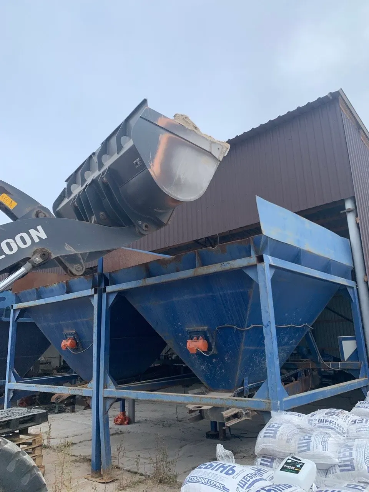

Доставка матеріалів
Постачання на об’єкт
ПРОДАЖ І ПОСТАЧАННЯ
Пісок, щебінь, відсів, керамзит і холодний асфальт. У мішках і навалом, з доставкою або самовивозом.

Матеріали, постачання та техніка для вашого об’єкта.

Фасування в мішки«Столиця & Сервіс» продає будівельні матеріали у мішках і навалом. Можна замовити доставку або забрати погоджений обсяг самостійно.
Про компаніюОберіть матеріал і зателефонуйте, щоб уточнити ціну та наявність.
Вантажівка з маніпулятором, самоскид і фронтальний навантажувач. Обговоріть задачу й уточніть можливість залучення техніки.
Переглянути технікуЗаздалегідь погодьте обсяг і спосіб отримання.
Постачання на об’єкт
За попереднім погодженням

Фото завантаження матеріалів і підготовки фасованого щебеню до відвантаження.
Фото та портфоліоВкажіть матеріал, потрібний обсяг і населений пункт.